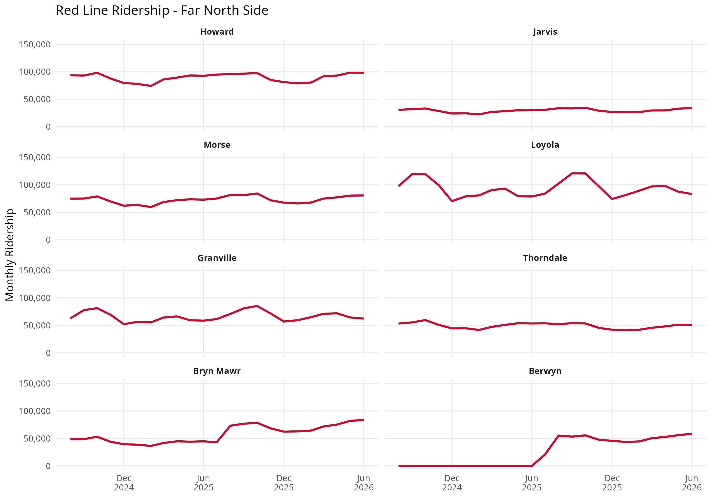
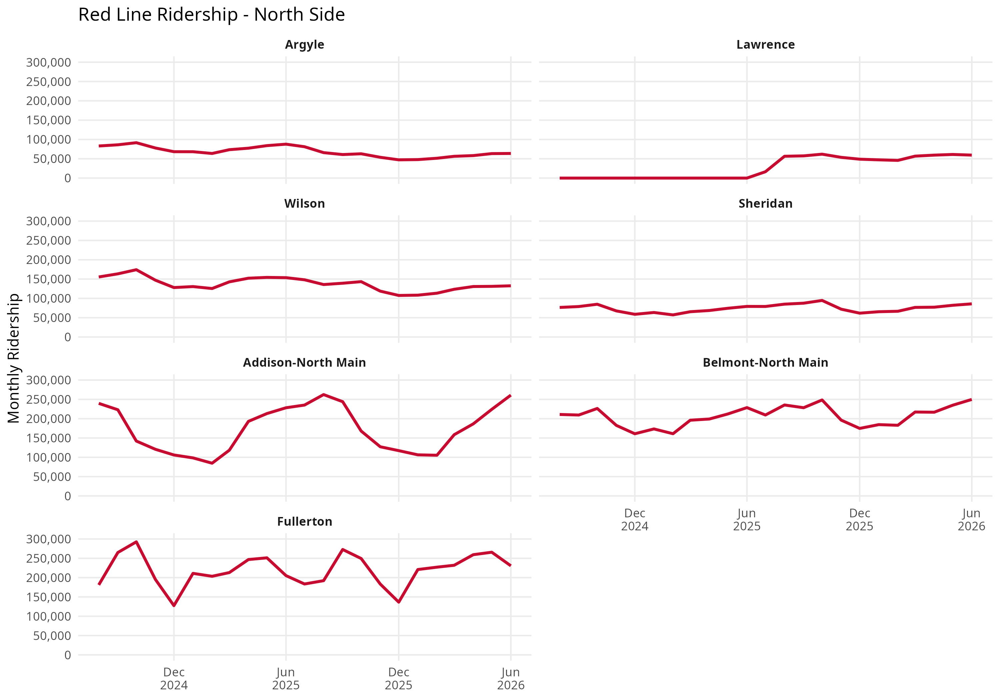
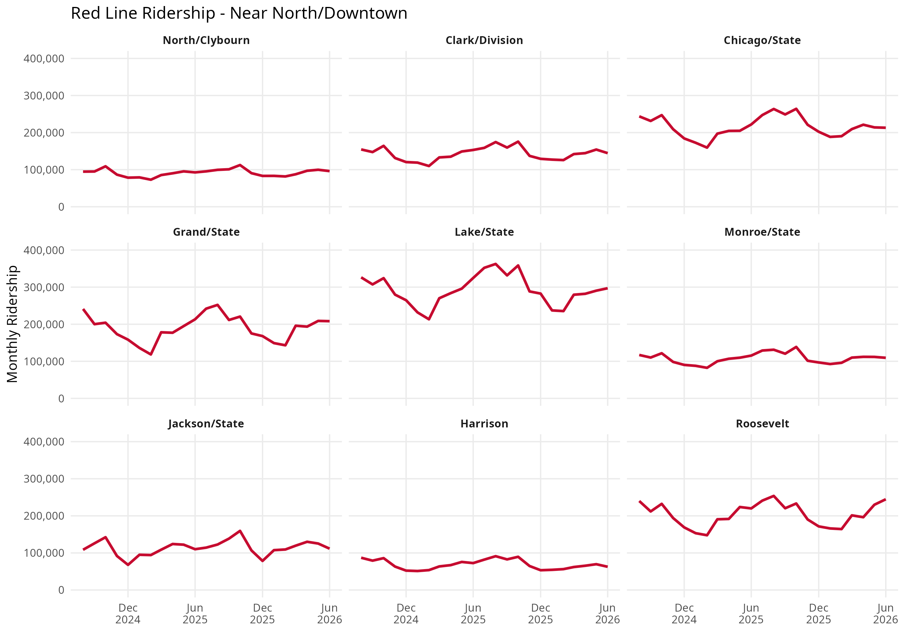
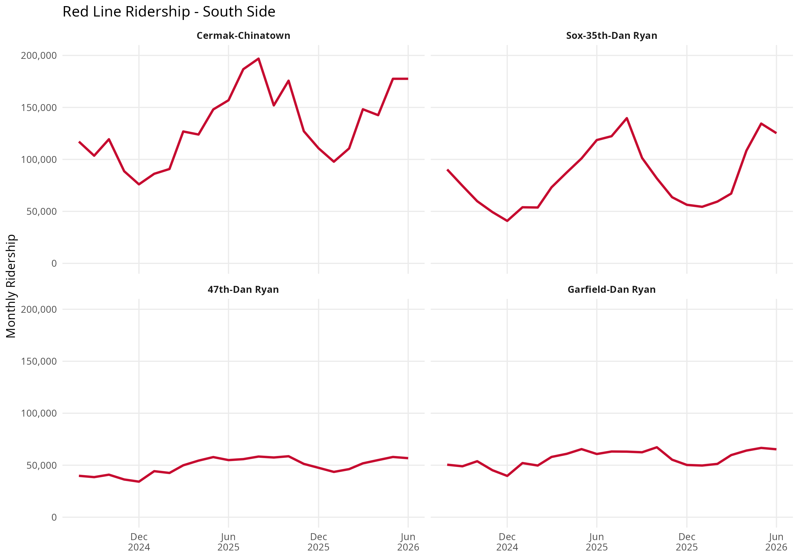
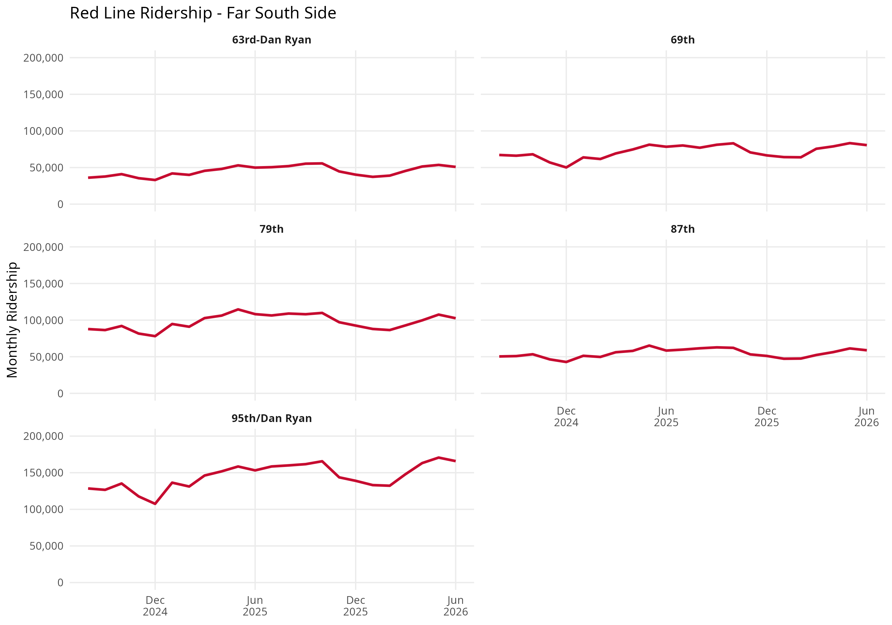

library(ggplot2)
library(dplyr)
library(tidyr)
ctastations <- read.csv("CTA-ridership-routes.csv")Exploring CTA Red Line Ridership with R
data analysis
transportation
featured
Analyzing monthly ridership trends across CTA Red Line stations using R.
Overview
How does ridership vary across CTA Red Line stations?
In this project, I used R to explore monthly CTA station ridership data, focusing specifically on the Red Line. I cleaned and organized the dataset, identified stations served by the Red Line, and created time-series visualizations to compare ridership patterns across stations.
Because the Red Line extends across a large portion of Chicago, displaying every station in a single visualization made the results difficult to interpret. I divided the stations into five geographic groups to make differences in ridership more visible:
- Far North Side
- North Side
- Near North / Downtown
- South Side
- Far South Side
Tools
- R
- ggplot2
- dplyr
- tidyr ## Preparing the Data I began by importing the CTA ridership dataset into R.
The monthly ridership totals were initially stored as text, so I converted them into numeric values. I also converted the month variable into a date format so that it could be used correctly in visualizations.
ctastations <- ctastations %>%
mutate(
monthtotal = as.numeric(
gsub(",", "", monthtotal)
),
month_beginning = as.Date(
month_beginning,
format = "%m/%d/%Y"
)
)Filtering Red Line Stations
Some CTA stations serve more than one rail line. Because of this, I filtered for any station whose route information included the Red Line.
redline <- ctastations %>%
filter(grepl("Red", route))This allowed transfer stations that serve the Red Line alongside other routes to remain part of the analysis.
Ridership by Station
Initially, I plotted every Red Line station together. However, having a separate line for every station made the visualization difficult to read.
Instead, I grouped stations geographically and created small-multiple charts. Each panel represents one station and shows how its monthly ridership changed over time.
Far North Side
The Far North Side group includes stations from Howard through Berwyn.

Key Findings
- Loyola has the highest ridership in the Far North Side group, which may be influenced by Loyola University Chicago’s Lake Shore Campus. Loyola averaged approximately 93,000 monthly rides during the period analyzed, while Howard averaged approximately 89,000. The Loyola Red Line station is located directly across from the campus, which serves more than 8,000 students and employs more than 2,000 faculty and staff. The university also promotes the Red Line as a primary way to reach the campus. While the ridership data alone cannot determine how many passengers are affiliated with the university, the campus likely represents an important source of travel to and from the station.
- Howard is an important transfer station served by the Red, Purple, and Yellow Lines. Its ridership therefore reflects its role as both a Red Line terminal and a connection to other CTA rail services, making it different from Red Line-only stations in this section.
- Bryn Mawr shows a substantial increase in ridership beginning in the second half of 2025. Monthly ridership eventually exceeded 80,000 by June 2026.
- Berwyn’s zero-ridership period reflects a station closure rather than a lack of passenger demand. Berwyn was closed from May 2021 through June 2025 as part of the Red and Purple Modernization project. The station reopened following reconstruction, explaining the sudden appearance of ridership in the dataset beginning in 2025.

North Side
The North Side group includes stations from Argyle through Fullerton.

Key Findings
- Belmont and Fullerton have the highest station ridership in this section, although both are major transfer stations served by the Red, Brown, and Purple Lines. Their higher ridership therefore reflects usage across multiple CTA rail services and should not be interpreted as Red Line ridership alone.
- Wilson is also served by Purple Line Express trains. This additional rail service distinguishes Wilson from nearby stations served exclusively by the Red Line and may contribute to differences in station usage.
- Addison shows particularly high ridership during the summer. The Addison Red Line station directly serves Wrigley Field, and ridership is noticeably higher during the Cubs’ baseball season. Ridership reached approximately 262,000 in August 2025. While the station-level data alone cannot establish that Cubs games caused the increase, the timing and station location suggest that Wrigley Field activity may contribute to the seasonal pattern.
- Lawrence’s zero-ridership period also reflects a station closure. Like Berwyn, Lawrence was closed from May 2021 through June 2025 as part of the Red and Purple Modernization project. Its reopening explains why ridership begins appearing in the dataset in 2025 rather than representing a sudden increase in passenger demand.

Near North / Downtown
This group follows the Red Line from North/Clybourn through Roosevelt.

Key Findings
- Lake has the highest average ridership in this section, averaging approximately 292,000 monthly rides. Its high ridership should be interpreted in the context of both its central Downtown location and its role as an important transfer point. Lake connects Red Line passengers with the nearby State/Lake elevated station and the broader Loop rail network.
- The State/Lake closure provides important context for Lake’s 2026 ridership. The elevated State/Lake station closed for reconstruction on January 5, 2026. Although the Lake Red Line subway station remained open, passengers transferring between the Red Line and elevated lines were redirected to Washington/Wabash. Changes in Lake ridership after January 2026 may therefore reflect altered transfer patterns associated with the construction project.
- Jackson is another transfer station in this section. Passengers can transfer between the Red and Blue Lines at Jackson, meaning its station usage is influenced by its role as a connection between two major CTA rail routes.
- Roosevelt is served by the Red, Green, and Orange Lines. Its relatively high ridership therefore reflects activity at a major transfer station and cannot be attributed exclusively to Red Line passengers.
- Ridership varies substantially even among stations located within the same geographic area. Harrison averaged approximately 69,000 monthly rides, while Lake averaged more than four times that amount. This suggests that Downtown location alone does not explain differences in station usage.
- Downtown ridership also shows seasonal variation. Combined ridership among these stations reached a low around February 2025 and a high around October 2025, indicating that time of year may also be important when comparing station usage.
South Side
The South Side group includes stations from Cermak-Chinatown through Garfield.

Key Findings
- Cermak-Chinatown has the highest ridership among the stations in this group, averaging approximately 132,000 monthly rides. Sox-35th follows at approximately 83,000.
- Sox-35th ridership may be influenced by Chicago White Sox games. The station directly serves Rate Field, home of the Chicago White Sox. Higher ridership during the baseball season may therefore reflect game-day travel in addition to regular neighborhood and commuting trips. While the station-level data alone cannot establish that White Sox games caused these increases, the station’s location and the timing of the baseball season make stadium activity an important factor to consider.
- Unlike several of the highest-ridership North Side and Downtown stations, none of the stations in this group directly transfer to another CTA rail line. Their ridership patterns are therefore not affected by the same type of rail-transfer activity seen at stations such as Belmont, Fullerton, Lake, and Roosevelt.
- Overall ridership increased substantially across this group during the period analyzed. Combined monthly ridership increased from approximately 298,000 in August 2024 to 425,000 in June 2026, an increase of roughly 43%. Because these stations do not serve as transfers to other CTA rail lines, this growth is particularly interesting for further analysis of changes in Red Line station usage on the South Side.
Far South Side
The Far South Side group includes stations from 63rd through 95th/Dan Ryan.

Key Findings
- 95th/Dan Ryan has the highest ridership in the Far South Side group, averaging approximately 145,000 monthly rides. Its role as the southern terminal of the Red Line and a major bus-to-rail transfer hub likely contributes to its high usage. Numerous CTA and Pace routes connect the station with Far South Side neighborhoods and south and southwest suburbs, including Roseland, Pullman, Washington Heights, Riverdale, Dolton, South Holland, Calumet City, Harvey, Homewood, Evergreen Park, Oak Lawn, and Chicago Ridge. As a result, 95th/Dan Ryan serves not only its immediate neighborhood but also functions as an important gateway to the CTA rail system for riders across Chicago’s southern region.
- Combined ridership increased across the Far South Side stations. Monthly ridership increased from approximately 370,000 in August 2024 to 459,000 in June 2026, an increase of roughly 24%.
- All five stations recorded higher ridership in June 2026 than in August 2024. This suggests that the increase was distributed across multiple Far South Side stations rather than being driven exclusively by 95th/Dan Ryan.
Overall Findings
Several broader patterns emerge when the Red Line is examined geographically.
First, high station ridership is often connected to a station’s role within the larger transit network. Several of the busiest stations in the analysis also provide connections to other CTA rail services. Howard serves the Red, Purple, and Yellow Lines; Belmont and Fullerton serve the Red, Brown, and Purple Lines; Jackson provides a connection between the Red and Blue Lines; and Roosevelt serves the Red, Green, and Orange Lines. Lake also provides an important connection between the Red Line and the Loop elevated system. As a result, station-entry totals at these locations should not be interpreted as Red Line ridership alone.
Second, the two ends of the Red Line function as important regional gateways. Howard and 95th/Dan Ryan are not simply neighborhood stations; they are the northern and southern terminals of the Red Line and provide connections to additional transit services. Howard connects riders with the Purple and Yellow Lines as well as CTA and Pace bus routes serving the Far North Side and nearby suburbs. Similarly, 95th/Dan Ryan connects the Red Line with numerous CTA and Pace bus routes serving the Far South Side and south and southwest suburbs. Their relatively high ridership may therefore reflect much larger service areas than the neighborhoods immediately surrounding each station.
Third, nearby destinations appear to provide important context for station ridership. Loyola’s relatively high ridership may be influenced by its proximity to Loyola University Chicago’s Lake Shore Campus. Addison shows a strong seasonal pattern that coincides with the Chicago Cubs’ baseball season and activity at Wrigley Field, while Sox-35th directly serves the Chicago White Sox ballpark. These patterns suggest that universities, sports venues, employment centers, and other major destinations can influence how individual stations are used.
Fourth, high ridership and ridership growth are not necessarily the same thing. North Side and Downtown stations include many of the highest-ridership stations in the dataset, several of which also function as major transfer points. Meanwhile, the South Side and Far South Side groups experienced substantial ridership growth during the period analyzed. Combined monthly ridership increased by approximately 43% in the South Side group and 24% in the Far South Side group between August 2024 and June 2026.
Fifth, infrastructure changes can create dramatic patterns in ridership data that do not represent changes in passenger demand. Berwyn and Lawrence recorded zero ridership during their closures and then experienced sudden increases following their reopenings in 2025. The State/Lake reconstruction beginning in January 2026 may similarly affect transfer patterns at Lake. Understanding these events is necessary to avoid interpreting construction-related changes as ordinary increases or decreases in ridership.
Overall, the analysis suggests that CTA station ridership cannot be explained by geography alone. A station’s role as a transfer point, its position as a terminal or regional gateway, nearby destinations, construction and service changes, and broader ridership trends all provide important context. Examining stations individually therefore reveals patterns that would be difficult to identify from Red Line-wide ridership totals alone.
Data Limitations
This analysis has several limitations that should be considered when interpreting the results:
Ridership is measured at the station level. The dataset records station entries and does not identify which rail line a passenger used. This is especially important for stations served by multiple CTA lines.
Transfer activity cannot be separated from local ridership. Station totals do not distinguish between passengers beginning their trips near a station and passengers using the station as part of a transfer.
The data does not explain the causes of ridership changes. Relationships between ridership and nearby destinations, events, construction, or service changes require additional data to confirm.
Station closures affect comparisons over time. Months when stations were closed may appear as zero ridership and should not be interpreted as periods of extremely low passenger demand.
The analysis covers a limited time period. The dataset spans August 2024 through June 2026, so the results describe recent patterns rather than long-term changes in CTA ridership.
These limitations mean that the results are most useful for identifying patterns and areas for further investigation rather than establishing causal relationships.